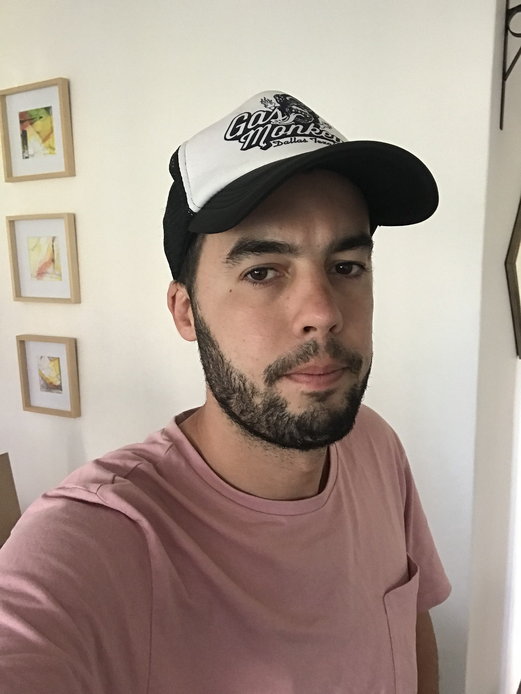

Informacion Personal

Soy muy emprendedor y sumamente activo, me destaco por ser prolijo y ordenado.
Le doy el maximo a lo que hago y soy muy perfeccionista.
Soy socio gerente, y cofundador, de KAPLACK SRL que es una empresa dedicada a la ingenieria electrica
donde tenemos muy buena reputacion entre nuestros clientes por realizar proyectos de alta calidad al precio medio del mercado.
Tambien realizamos direccion y ejecucion de las obras "llave en mano" y mantenimiento en industrias.
Tengo otro proyecto del que también soy socio gerente y cofundador, AutoInfinity donde nos dedicamos a
la compra y venta de vehiculos usados seleccionados y recomendados.
El ultimo emprendimiento que estoy iniciando es Gauss Electric Fun, una empresa dedicada a soluciones
de movilidad electrica, donde vendemos y alquilamos vehiculos electricos.
Idiomas que hablo y escribo:
- Español
- Inglés